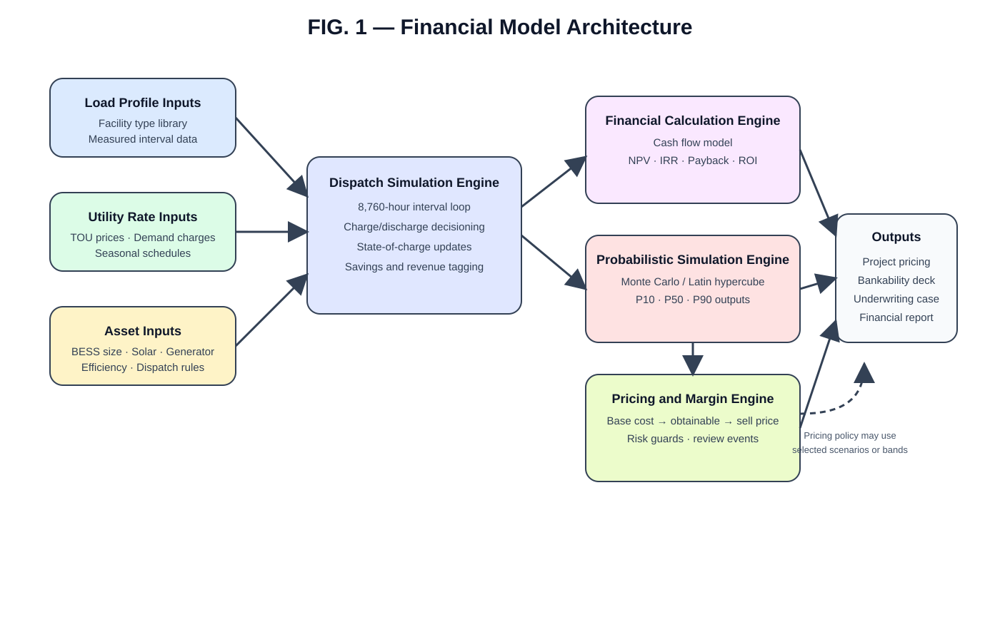
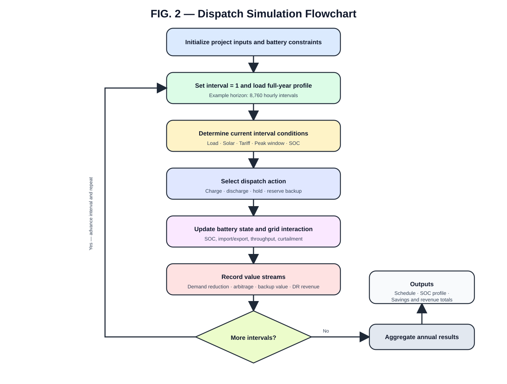
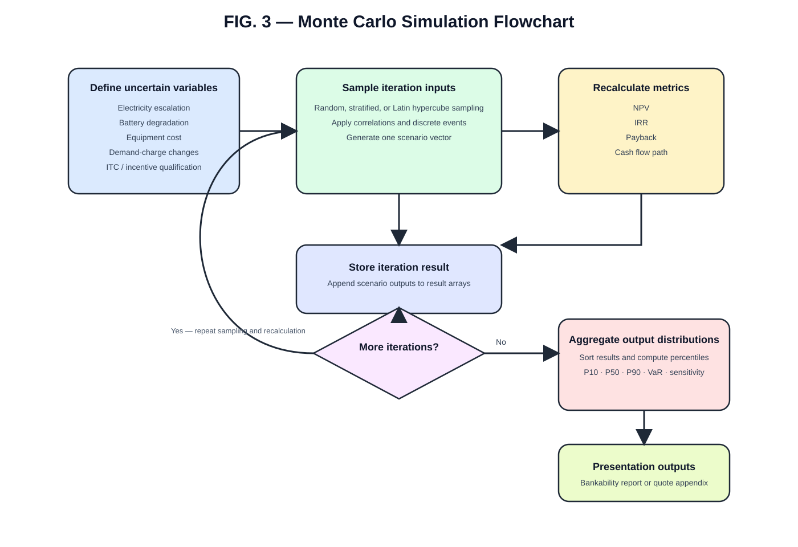
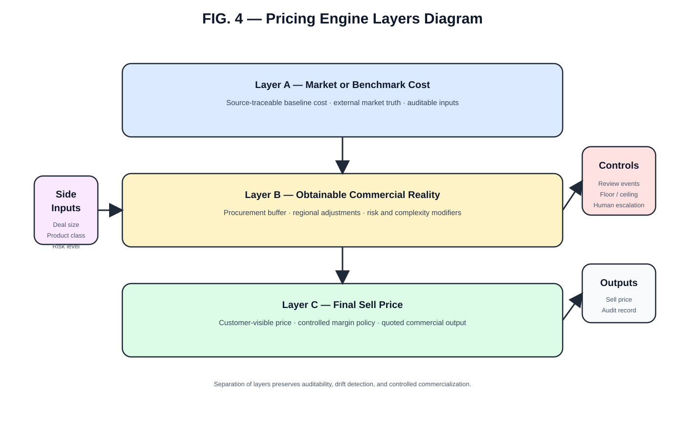
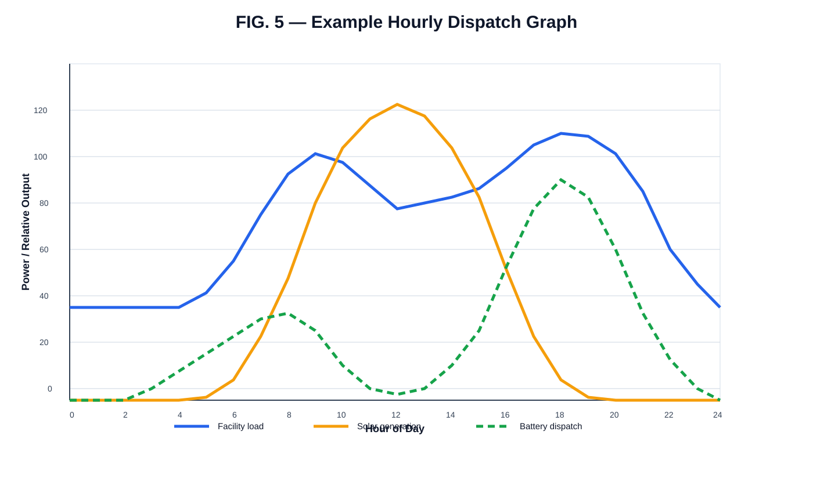
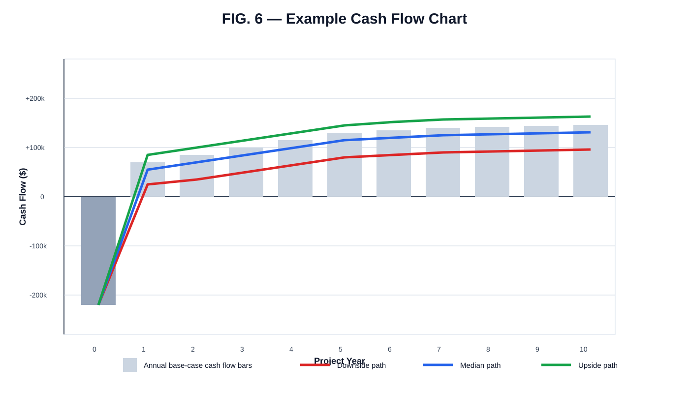

You can paste the following into Word.
This invention relates to financial modeling and operational optimization of infrastructure systems, and more specifically to computer-implemented systems and methods for simulating energy storage dispatch, calculating financial performance metrics, and performing probabilistic financial analysis for infrastructure projects including battery energy storage systems, solar generation systems, generators, electric vehicle charging infrastructure, and microgrids.
Financial evaluation of infrastructure projects such as battery energy storage systems and solar power systems typically relies on spreadsheet-based models that use simplified assumptions, annual averages, and deterministic inputs. These models often fail to capture time-of-use electricity pricing, demand charges, equipment degradation, and uncertainty in future electricity prices and incentives.
Traditional financial models also fail to simulate hourly dispatch behavior of battery systems and do not incorporate probabilistic risk modeling for key variables such as electricity rate escalation, equipment cost changes, and tax incentive qualification.
There exists a need for a system that integrates operational simulation and probabilistic financial modeling into a unified platform for evaluating infrastructure investments.
The present invention is a computer-implemented system that performs operational simulation and probabilistic financial modeling for infrastructure systems.
The system:
The system may be used for battery energy storage systems, solar systems, generators, microgrids, and other infrastructure systems.
The system includes the following components:
These components operate together to simulate infrastructure system performance and financial outcomes.
The dispatch simulation engine simulates operation of an energy storage system over a time period.
In some embodiments, the system simulates operation over 8,760 hours representing one full year.
For each time interval, the system may:
The system may evaluate multiple dispatch strategies including:
The system may include a library of load profiles corresponding to facility types including but not limited to:
These load profiles may include hourly load values for a full year.
The system may model utility rate structures including:
The system calculates cost savings based on simulated system operation and utility rate structures.
The system calculates financial metrics including:
The system may calculate these values based on simulated operational performance rather than simplified annual averages.
The system performs probabilistic financial analysis using variable ranges and probability distributions.
Variables may include:
The system may perform Monte Carlo simulations using multiple iterations to generate distributions of financial outcomes.
The system may produce:
This provides a range of possible financial results rather than a single deterministic value.
The system may include a pricing engine that determines project pricing.
The pricing engine may:
A key aspect of the invention is that operational simulation and financial modeling are integrated into a single system.
Operational simulation outputs are used directly as inputs to financial calculations, enabling accurate financial modeling based on simulated system behavior.
Example workflow:
The system may be used for financial evaluation of infrastructure including:
The present invention provides a system that integrates operational simulation and probabilistic financial modeling, enabling improved evaluation of infrastructure investments.
Add diagrams:
Figure ideas:





